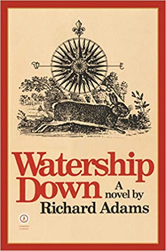

Watership Down
Richard Adams
Published: June 1st, 1975
475 pages
Set in England's Downs, a once idyllic rural landscape, this stirring tale of adventure, courage and survival follows a band of very special creatures on their flight from the intrusions of man and the certain destruction of their home. led by a stouthearted pair of friends, they journey forth from their native Sandleford Warren through the harrowing trials posed by predators and adversaries, to a mysterious promised land and a more perfect society.